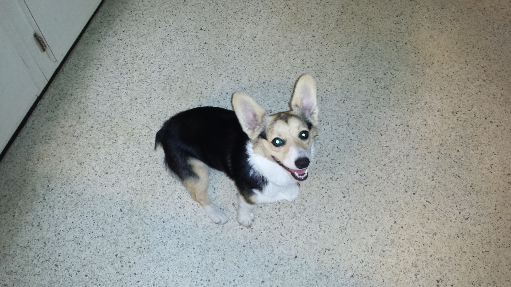
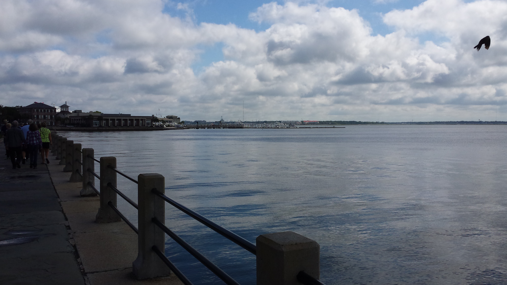
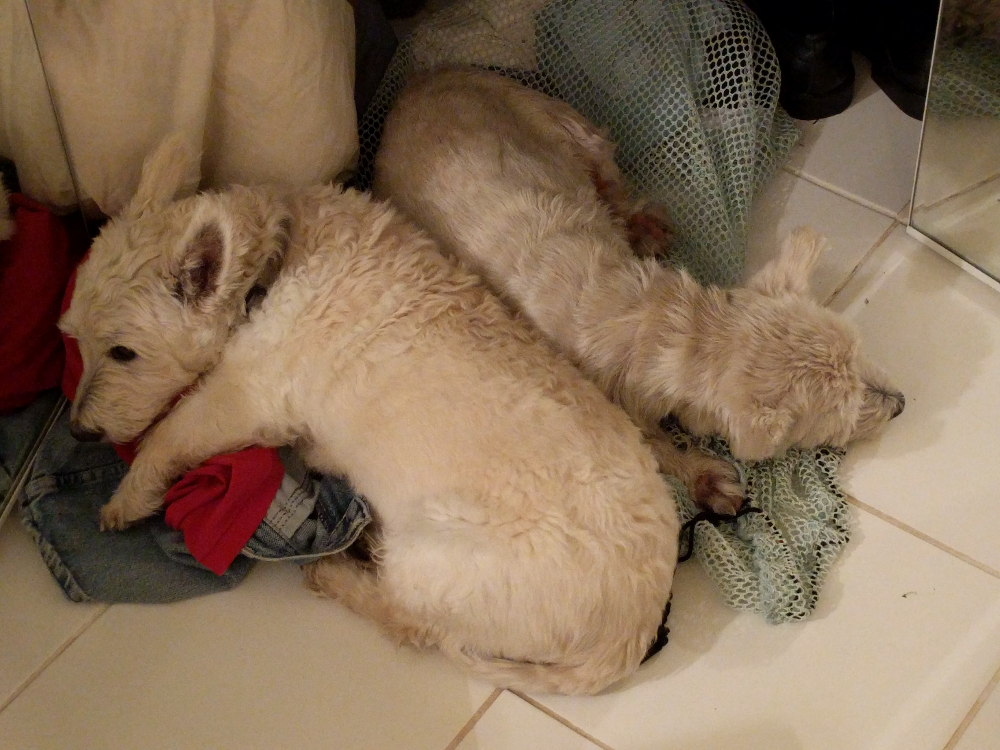

Congratulations to my friend Erik, who will be an Assistant Professor at the University of Central Oklahoma starting in Fall 2016! Erik has been a good friend since 2008, when I met him through my good friend and roommate at the time. Erik is not only a stellar scholar and teacher but also a sweet guy and is richly deserving of this opportunity. Good luck, Erik!!
Congrats to Dan!
Congrats to my friend Dan, who will be teaching at the University of Michigan-Flint starting in the fall of 2016! I've known Dan since 2005, when we took a seminar together (remember Getting the Documents to Speak, Dan?). I am thrilled at his success and wish him and his family the best!
Home Cooked Food

I had a very nice dinner with my relatives, Carl and Donna. They sure know how to cook a chicken!
We went on a nice nature walk and then had dinner. It will be a shame to leave them when I leave Floria.
You should check out their nursery! The above picture is their dog, Nia, a Welsh Corgi.
Charleston Wedding (May 21, 2016)

I had been meaning to post about this for a while, but never got around to it. I recently attended the beautiful wedding of my cousin, Bruce, to Darim, whom he met in the Army. It was a great event and a precious time for family to converge.
I was particularly happy to see my brother and mother there. I look forward to seeing the latter soon, when I return to Blacksburg!
All best wishes to Bruce and Darim!
Made it to Denver!

I finally made it to Denver! It was a long 3-day drive, but I'm here. I'm excited for this new chapter and new start!
The above photo is of my host's two Westies. They are a joy to be around and make me miss Mal (my cat) a bit less.
%20image001.jpg?itok=cZmTE1QT)